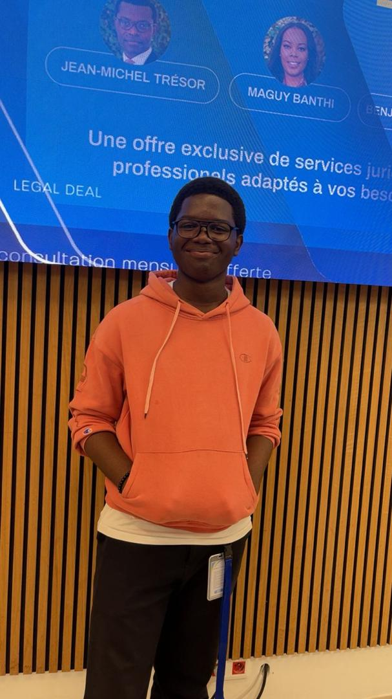

Afrinex connects African startups with opportunities investors talents and visibility.

Africa Has Talent
But The Ecosystem Is Fragmented
Every day across Africa, talented founders are building innovative startups capable of transforming industries, creating jobs, and sloving real local problems.
However most of these startups never reach their full potential.
Not because the ideas are bad.
Not because the founders lack ambition.
But because the African startup ecosystem remains deeply fragmented.
- Access investors
- Find technical talents
- Gain visibility
- Build strategic networks
- Discover opportunities
- Access mentorship and support
- Investors struggle to discover high-potential African startups
- Talents struggle to find meaningful startup ooportunities
- Startup communities remain disconnected across countries
As a result thounsand of promising African innovations remain invisible.
High failure potential rate
of African startups fail before scaling.
Over 54% between 2010 and 2018 .
+95%
of African founders lack investor visibility.
Many founders report being overlooked by investors due to limited networks, cultural gaps,...
Fragmented
ecosystems slow collaboration and innovation across Africa.
Over 70% of tech ecosystem actors cite a lack of cooperation culture, while nearly two-third note absent exchange structures, trapping innovation in silos.
Africa doesn't lack innovation.
It lacks connected infrastructure.
That's why we are building Afrinex
Building the digital infrastructure
For Africa's startup ecosystem
Afrinex is building a connected ecosystem where African startups, investors, talents and innovation communities can discover, connect and grow together.
Instead of operating in isolation, Afrinex creates a centralized platform designed to increase visibility, collaboration and opportunities across the African innovation landscape.
-
We help:
- startups gain exposure and opportunities
- investors discover promising African ventures
- Talents connect with innovative startups
- ecosystems become more connected across borders
Afrinex transforms fragmented innovation into a connected African startup network.
Discover African Startups
Explore innovative startups across multiple African countries and industries through structured startups profiles.
Connect Founders & Investors
Enable investors to discover high-potential startups while helping founders access visibility and strategic opportunities.
Talent & Collaboration Network
Allow developers, designer, marketers and innovators to connect with startups building the future of Africa.
Ecosystem Visibility
Showcase incubators, startups communities, program, events and innovation hubs across Africa.
Opportunities & Growth
Centrtalized grants, accelerators, competitions, partenerships and fundin opportunities for African entrepreneurs.
Afrinex is not just a platform.
It is the foundation of a more connected African innovation economy.
Afrinex is building the ecosystem infrastructure Africa needs to unlock its next generation of innovation.
Experiment The Futur Of
Africa's Startup Ecosystem
Afrinex provides a moderne platform where startups, investors, talents and innovation ecosystem can connect through visibility, networking and opportunities.
Designed for the next generation of African innovation, the platform centralizes everything needed to help startups grow faster across the continent.
Traction
Active Startups
Ten active startups testing and developing local solutions.
Followers
AfriNex account is growing with 16 engaged followers.
Founders
Active founder network: over 10 founders and 1 partner incubator.
Regional Expansion
Initial deployments planned in RDC, followed by the Congo.
Those indicators reflect a promising start and regional growth potential.
Validating a Real Need
Afrinex was born from a clear market observation: African startup ecosystems remain fragmented, making visibility, connection and opportunity difficult to access.
Our early conversations with founders and ecosystem actors confirm a strong demand for a centralized platform built specifically for Africa's innovation ecosystem.
Milestones Timeline
Build by Young Avfrican Builders
Driven By Vision & Innovation
Afrinex is led by a new generation of African innovators passionate about technology, entrepreneurship and ecosystem development.
Our mission is to help connect Africa's fragmented that empowers founders, investors, talents and communities across the continent.

Nsiete Jean-claude Mauricio
Founder & CEOYoung African Entrepreneur, visionary builder and ecosystem-driven innovator focused on creating scalable technology platforms for Africa's future.
Leading Afrinex with the ambition of building one of Africa's most connected innovation plqtforms.
Manianga Jonathan
Co-founder & Marketing & Growth
Ilunga Jean-michel
Co-founder & Head of contentSika victoria
Co-founder & Business & Partner communicationKatumba Dan
Co-founder & Research directorWhy Our Team Matters
Afrinex is being built by people who understand the realities of African innovation ecosystems firsthand.
We are not building from outside the problem.
We are building from the ecosystem.
Behind every strong ecosystem is a generation willing to build its future.
Building Africa's Innovation Futur
Together
Our partners include leading innovation hubs, incubators, accelerators, and investors across Africa.
Afrinex is building an open ecosystem designed to unit layers of African innovaton into one connected network.
Let's build Africa's Startup Infrastructure Together
-
Whether you are:
- an investor
- incubator
- innovation hub
- startup community
- university
- organisation
Afrinex is open to building meaningful ecosystem partnerships
The futur of African innovation will be built through connected ecosystems, not isolated communities.
Contact Us
Have questions or want to learn more about Afrinex? Get in touch with our team!